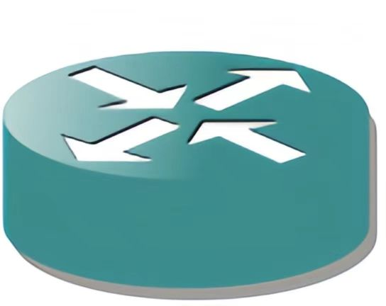
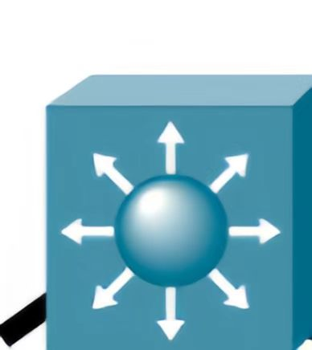
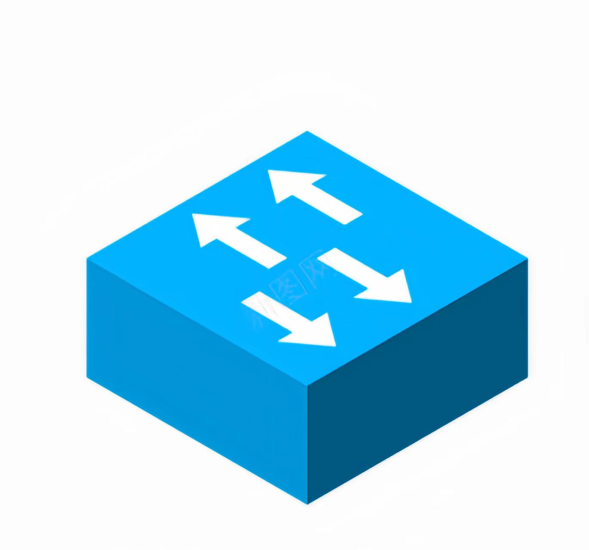
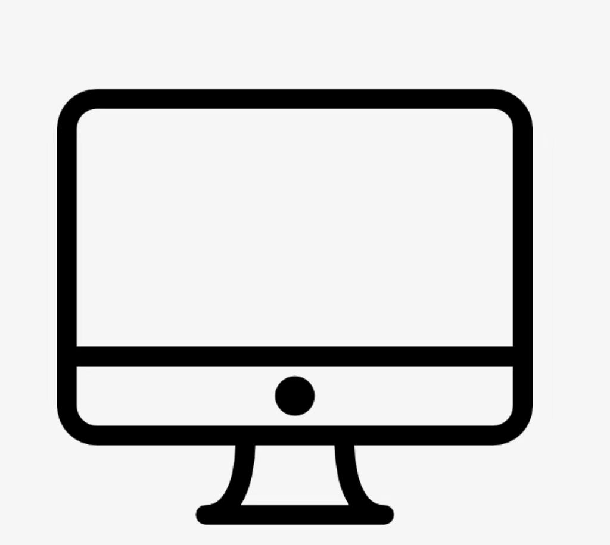

线路信息
网络拓扑

路由器

三层交换机
三层交换机

二层交换机
二层交换机

PC1
PC2
PC3
PC4
通过指针悬停查看设备的详细信息
流表日志
日期
时间
描述
2024-5-30
18:20:53
未完成方案
2024-5-30
16:22:47
完成方案
2024-5-30
09:18:22
完成方案
2024-5-30
09:14:59
完成方案
2024-5-30
09:15:11
未完成方案
2024-5-30
09:10:00
完成方案
SDN控制器性能
Packet-In
3000 packets/s
API性能
响应时间：50ms
请求成功率>99%
故障恢复时间
<2秒
CPU利用率
45%
内存利用率
60%
存储利用率
75%